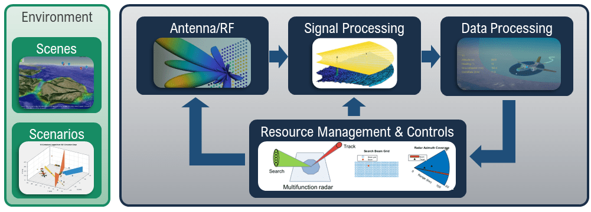

Radar
Radar engineering teams use MATLAB® and Simulink® to design, analyze, simulate, and test multifunction radar systems. Combine Radar Toolbox with other MathWorks® products to reduce development time, eliminate design problems early, and streamline analysis and testing for airborne, ground-based, maritime, and automotive radar systems.

With MathWorks products for radar systems, you can develop models that support the entire life cycle of radar systems:
Perform link budget analysis, model architectures, and evaluate system design tradeoffs.
Create georeferenced scenarios and simulate radar signals, detections, and tracks.
Design signal and data processing chains for different waveforms and phased array front ends.
Automatically generate HDL or C code for prototyping and deployment.
Products for Radar
Topics
Radar Systems Engineering
- Radar Link Budget Analysis (Radar Toolbox)
Use the Radar Designer app to perform a link budget analysis when designing a radar system. (Since R2021a) - Radar Architecture: System Components and Requirements Allocation (Part 1) (Radar Toolbox)
Starting from a set of performance requirements, design, implement, and test a radar system in Simulink - Part 1. (Since R2021a) - Define and Test Tracking Architectures for System-of-Systems (Sensor Fusion and Tracking Toolbox)
This example shows how to define the tracking architecture of a system-of-systems that includes multiple detection-level multi-object trackers and track-level fusion algorithms. (Since R2021a)
Radar Scenario Simulations
- Radar Performance Analysis over Terrain (Mapping Toolbox)
The performance of a radar system can depend on its operating environment. This example shows how radar detection performance improves as target elevation increases above the terrain. - Simulate and Track Targets with Terrain Occlusions (Sensor Fusion and Tracking Toolbox)
This example shows you how to model a surveillance scenario in a mountainous region where terrain can occlude both ground and aerial vehicles from the surveillance radar. (Since R2022a) - Simulated Land Scenes for Synthetic Aperture Radar Image Formation (Radar Toolbox)
Simulate I/Q signals from a synthetic aperture radar (SAR) system that uses platform motion to mimic a longer aperture to improve cross-range resolution using a range migration focusing algorithm. (Since R2022a)
Multifunction Radar
- Adaptive Tracking of Maneuvering Targets with Managed Radar (Radar Toolbox)
Employ radar resource management to efficiently track multiple maneuvering targets and use an interacting multiple model (IMM) filter to estimate when the target is maneuvering to optimize radar revisit times. (Since R2021a) - Multibeam Radar for Adaptive Search and Track (Radar Toolbox)
UseradarDataGeneratoras part of a closed-loop simulation of a multifunction phased array radar (MPAR) tracking multiple maneuvering targets. (Since R2022b) - Track Space Debris Using a Keplerian Motion Model (Sensor Fusion and Tracking Toolbox)
This example shows how to model earth-centric trajectories using custom motion models withintrackingScenario, how to configure afusionRadarSensorin monostatic mode to generate synthetic detections of space debris, and how to setup a multi-object tracker to track the simulated targets.
Radar Antennas, Beamforming, and Waveforms
- Modeling Mutual Coupling in Large Arrays Using Embedded Element Pattern (Phased Array System Toolbox)
Model mutual coupling effects between array elements by using an embedded pattern technique. The example models an array two ways: (1) using the pattern of the isolated element or (2) using the embedded element pattern, and then compares both with the full-wave Method of Moments (MoM)-based solution of the array. - Conventional and Adaptive Beamformers (Phased Array System Toolbox)
Apply three beamforming algorithms to narrowband array data: the phase shift beamformer, the minimum variance distortionless response (MVDR) beamformer, and the linearly constrained minimum variance (LCMV) beamformer. - Radar and Communications Waveform Classification Using Deep Learning (Phased Array System Toolbox)
Classify radar and communications waveforms using the Wigner-Ville distribution (WVD) and a deep convolutional neural network (CNN).
Code Generation and Deployment
- Rectangular Array MVDR Beamformer (Phased Array System Toolbox)
Implement a minimum-variance distortionless-response (MVDR) beamformer for a 4x4 rectangular antenna array on FPGA. - Processor-in-the-Loop Verification of JPDA Tracker for Automotive Applications (Sensor Fusion and Tracking Toolbox)
Generate embedded code for a JPDA tracker and verify it using processor-in-the-loop (PIL) simulations. (Since R2022a)
Related Information
Featured Examples

SAR Target Classification Using Deep Learning
Create and train a simple convolution neural network to classify SAR targets using deep learning.
Extended Target Tracking with Multipath Radar Reflections in Simulink
Model and mitigate multipath radar reflections in a highway driving scenario in Simulink similarly to the Highway Vehicle Tracking with Multipath Radar Reflections MATLAB example.

Maritime Clutter Suppression with Neural Networks
Train and evaluate a convolutional neural network to remove clutter returns from maritime radar PPI images using the Deep Learning Toolbox™.

Display Animation of Radar Images over GOES Backdrop
Display a movie of radar images collected once per hour over a backdrop.

Air Traffic Control
Generate an air traffic control scenario, simulate radar detections from an airport surveillance radar (ASR), and configure a global nearest neighbor (GNN) tracker to track the simulated targets using the radar detections. This enables you to evaluate different target scenarios, radar requirements, and tracker configurations without needing access to costly aircraft or equipment. This example covers the entire synthetic data workflow.

Planning Radar Network Coverage over Terrain
Plan a radar network using propagation modeling over terrain and use the radar equation to determine whether target locations can be detected.